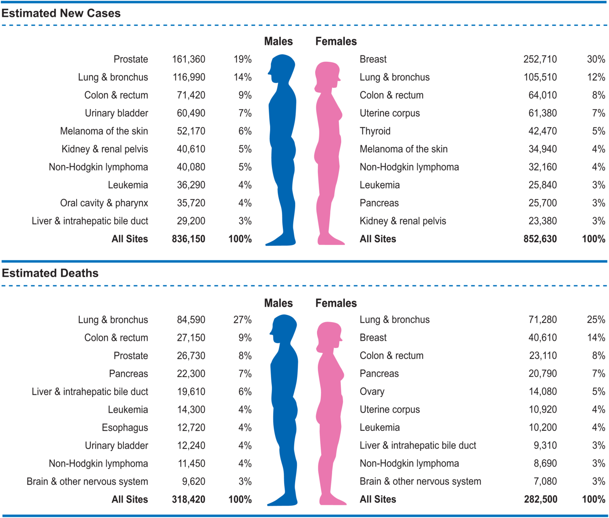

Cancer numbers
Oct 21 2017 diseaseThese numbers are based on Cancer Statistics 2017, partly projections for 2017 in the US.

Incidence
The cancers with the highest incidence are prostate cancer in man (20%) and breast cancer in woman (30%). The second and third are lung and colon cancer.
Death
Lung cancer is by far the most deadly cancer, responsible for 25-27% of cancer deaths. It is followed by colon cancer and prostate/breast in male/female.
Brain cancer is the most deadly cancer in the young population (<40 years old). It is the second most common cancer after leukemia in this age group.
Gender ratio
Lifetime probability to be diagnosed with invasive cancer is 40.8% for men and 37.5% for women.
Incidence of liver cancer is three times higher in men than in women. Even more for esophagus, larynx and bladder.
Incidence are higher in women for cancers of the thyroid, anus, gallbladder.
Some disparities in mortality is driven by earlier diagnosis in women. Same for incidence because of the different environmental exposure (e.g. smoking).
Other numbers
Height is positively associated with cancer incidence and death!? Apparently because taller individuals have more cells, and having more cells means more chance of getting cancer.